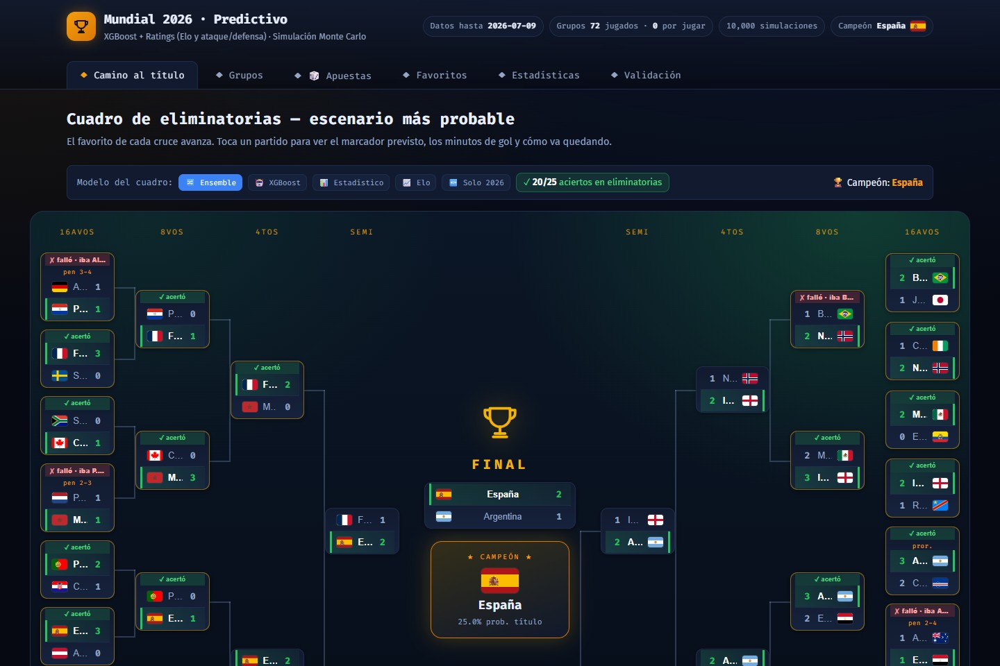

¿Qué predice?
Para cada partido: la probabilidad de victoria, empate o derrota, los goles esperados y en qué minutos es más probable que caigan. Para el torneo: la probabilidad de que cada selección llegue a cada fase y sea campeona.
Un modelo de machine learning (aprendizaje automático: programas que aprenden patrones a partir de datos) estima cada partido del Mundial 2026 con más de 49,000 partidos internacionales de historia y simula el torneo completo 10,000 veces. La web muestra el cuadro de eliminatorias, los grupos, los favoritos y una validación honesta contra los resultados reales.
Demo del frontend con el conjunto público de datos del proyecto · corte al 9 de julio de 2026 · no se actualiza en vivo.

Para cada partido: la probabilidad de victoria, empate o derrota, los goles esperados y en qué minutos es más probable que caigan. Para el torneo: la probabilidad de que cada selección llegue a cada fase y sea campeona.
En el futbol caen pocos goles y el azar pesa mucho. Decir «gana tal equipo» esconde la incertidumbre, y una predicción solo vale si se puede comparar contra una referencia simple y contra lo que de verdad pasó.
Combinar varios modelos, simular miles de torneos para convertir cada partido en probabilidades de avance y medir el acierto partido por partido, usando solo la información que existía antes de cada juego.
Un solo comando entrena los modelos, simula el torneo y genera los datos que lee la web.
Resultados internacionales, goleadores y tandas de penales de un conjunto público, con los nombres históricos de las selecciones normalizados.
Un rating Elo dinámico y una medida de ataque y defensa para cada equipo, con más peso a los partidos recientes.
XGBoost, un modelo estadístico de marcadores y Elo estiman cada partido; un ensamble los combina.
Monte Carlo juega el torneo 10,000 veces sobre el cuadro oficial: marcadores, minutos de gol, prórroga y penales.
Cada modelo se puede elegir en la app para armar su propio cuadro y comparar.
Un puntaje de fuerza que sube al ganar y baja al perder, más cuando el rival es fuerte. Aquí además pesa el margen de goles, la localía y la importancia del torneo.
Modela los goles de cada equipo con una distribución de Poisson (la que describe cuántas veces ocurre un evento raro, como un gol) y corrige los marcadores bajos, como 0-0 y 1-0.
Muchos árboles de decisión pequeños, cada uno corrigiendo los errores de los anteriores (gradient boosting). Un clasificador estima victoria, empate o derrota, y dos regresores estiman los goles de cada lado. Usa como variables el Elo, el ataque y la defensa, la forma reciente, si se juega en campo neutral, el peso del torneo y la geografía (altitud y viajes).
Combina Elo, el modelo estadístico y XGBoost con pesos ajustados en un conjunto de desarrollo.
Monte Carlo significa repetir un sorteo al azar miles de veces para ver qué tan seguido pasa cada cosa. Se sortean marcadores a partir de los goles esperados; en eliminatoria, los empates se resuelven con prórroga y penales según el Elo, y los 8 mejores terceros se acomodan respetando las reglas oficiales del cuadro.
Los minutos se toman de la distribución real de miles de goles históricos: los goles tardíos son más probables.
En futbol hay tres resultados posibles, así que adivinar al azar acierta cerca del 33%. Todas las cifras salen del conjunto público incluido en la demo.
Backtest walk-forward (cada partido se predice solo con información anterior a él) de 1970 a 2026. El ensamble acierta el 58.0% contra el 57.3% del Elo solo, y baja la log-loss de 0.957 a 0.949. La log-loss castiga estar muy seguro y equivocarse: más baja es mejor.
Predicciones hechas antes de cada partido y comparadas con el resultado real: el modelo acertó al ganador en 59 de 97 partidos.
Por tramos de 15 minutos, la proporción prevista de goles se separa en promedio 0.78 puntos porcentuales de la real, medida sobre 2,826 goles.
Los penales y el historial entre los dos equipos se probaron como variables y se descartaron porque no mejoraban el acierto. Los datos que solo existen para 2026 (lesiones, ventaja de anfitrión) se aplican como ajuste a partidos futuros, nunca al entrenamiento.
Una web estilo Mundial que lee los datos generados por el modelo.
El camino al título con el escenario más probable. Al abrir un partido se ve la probabilidad de avanzar, el marcador previsto, la línea de tiempo de goles y un mapa de calor de cuándo es más probable que anote cada equipo.
Arma el cuadro con el ensamble, XGBoost, el modelo estadístico, Elo o una versión entrenada solo con 2026.
Posiciones con resultados reales: clasifican los dos primeros de cada uno de los 12 grupos y los 8 mejores terceros.
La probabilidad de cada selección de llegar a cada fase y de ser campeona.
Líderes del torneo en goles, asistencias, tiros, distancia y vallas invictas.
Cada predicción hecha antes del partido junto al resultado real, con aciertos y fallos marcados. No son predicciones actualizadas en vivo: la demo conserva su fecha de corte.
pandas, NumPy, SciPy, scikit-learn y XGBoost; probado desde Python 3.11.
Un script entrena, simula y escribe JSON; la web es estática y no necesita servidor propio.
Las APIs de datos solo se llaman en scripts de recolección que guardan en caché; el entrenamiento lee archivos locales y no gasta cuota.
La fuga de datos es entrenar con información que no se tendría antes del partido. Por eso la validación es walk-forward y los ajustes de 2026 solo tocan partidos futuros.
Scripts dedicados prueban variables, señales y pesos uno por uno; lo que no mejora la validación se queda como información, no como predictor.
HTML, CSS y JavaScript puros con tema oscuro; cuadro oficial de 48 selecciones, de la ronda de 32 a la final.